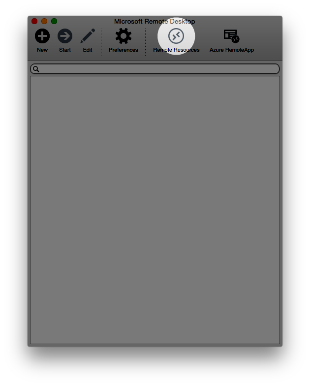
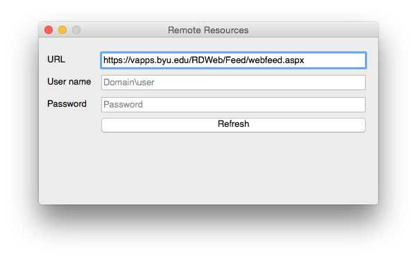
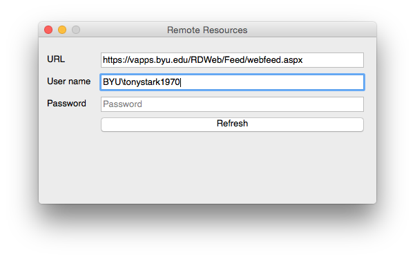
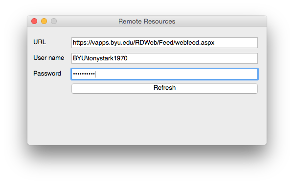
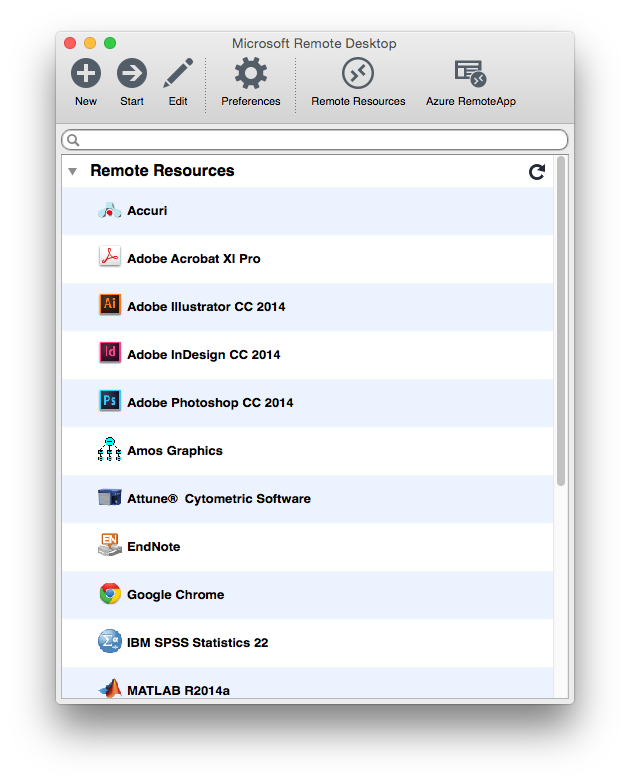

-
1Install Microsoft Remote Desktop for Mac
-
2Open Microsoft Remote DesktopThe app should be located in your "Applications" folder.
-
3Click "Remote Resources"
-
4Paste the following URL into the "URL" fieldhttps://vapps.byu.edu/RDWeb/Feed/webfeed.aspx 
-
5Type "BYU\" followed by your Net ID in the "User name" fieldIf my Net ID was "tonystark1970", I would type "BYU\tonystark1970". 
-
6Type your password in the "Password" fieldType the same password you use with your Net ID on BYU websites. 
-
7Click the "Refresh" button
-
8Double-click the app you want to run
-
9Enjoy!